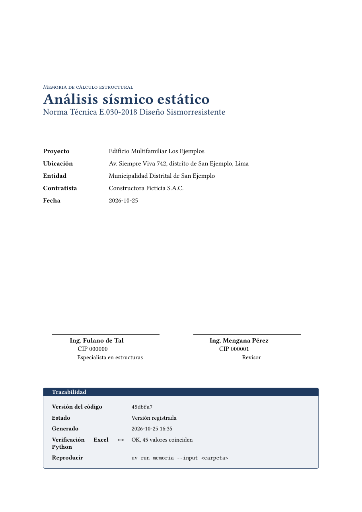
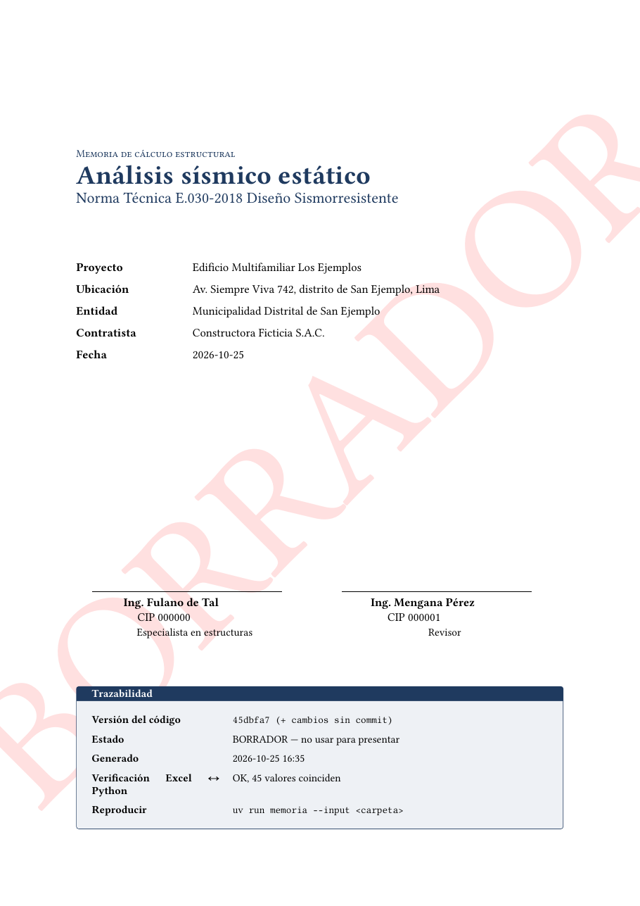

Un caso de estudio con la Norma E.030 Diseño Sismorresistente
Levanten la mano los que alguna vez
le pidieron su Excel a un colega.
¿Y los que lo recibieron?
¿Celos profesionales?
¿Porque les costó años armarlo?
¿Por miedo a que les copien V = ZUCS/R · P…
…que está en la norma, gratis, publicada en El Peruano?
Seamos honestos. Si me pasas tu Excel, también me pasas esto:
| Insumo / Partida | Und. | Cant. | P. U. (S/) |
|---|---|---|---|
| Arena gruesa | m³ | 0.52 | 65.00 |
| Cemento Portland Tipo I (42.5 kg) | bls | 9.73 | 50.00 |
| Piedra chancada 1/2" | m³ | 0.53 | 70.00 |
| Agua | m³ | 0.18 | 5.00 |
| Cartel de obra 3.60 × 7.20 m | und | 1.00 | 5,000.00 |
| Movilización y desmovilización | glb | 1.00 | … |
Ese Excel no es una memoria de cálculo.
Es una declaración jurada… con fórmulas.
Por eso no se comparte.
Nada de lo que vieron es ingeniería.
El precio, la empresa, la entidad, los nombres… son datos.
La ingeniería es esto. Y esto no tiene nada que esconder.
No digo que todos.
Pero al que no tiene nada que esconder,
hoy le quito la última excusa.
¿Qué fórmula cambiaste hace seis meses, y por qué?
Un error de tipeo vive en todos los proyectos que copian ese archivo.
=B3*B4*B7*B5/B9*B12
Tu mejor colega tarda horas siguiendo celdas.
Los datos y el cálculo viven en el mismo archivo.
Excel no es el problema.
El problema es usarlo como código fuente.
Que sea el entregable, no el lugar donde se piensa.
| src/ | El motor: funciones de la norma | público |
| tests/ | Pruebas | público |
| input_example/ | Proyecto ficticio completo | público |
| input/ | Tu proyecto real | privado |
| output/ | Entregables generados | privado |
$ uv run memoria --input input_example # se comparte en GitHub $ uv run memoria --input input # tu proyecto real, nunca sale de tu PC
$ git add -f input/proyecto.yaml $ git commit -m "avance" ✋ Commit bloqueado: estos archivos contienen datos confidenciales del proyecto: input/proyecto.yaml Los datos reales viven en input/ y las salidas en output/; ninguno se sube. Para compartir un caso, crea datos ficticios en input_example/.
Y el Excel generado tiene como autor memoria-e030, no tu usuario de Windows.
¿De dónde sale 6? ¿Y 2.5?
¿Qué hay en F4:F8?
Fórmulas vivas con nombres:
=Z*U*C_R*S*P
Las tablas de la norma van dentro del libro. Sin LAMBDA: funciona en Excel 2016/2019.
Cada paso: descripción, artículo, fórmula, fórmula con números y resultado. Con espacio para la firma.

Excel: memoria_e030.xlsx
(verificación OK, 45 valores coinciden)
PDF: memoria_e030.pdfERROR: el Excel no coincide con el motor
Se guardó como memoria_e030.RECHAZADO.xlsx
No se generó la memoria.
Código con cambios sin commit
Versión registrada:
commit 7a9fbac Date: 2026-10-25 Ajusta C/R para la torre de oficinas En la torre el C/R salía clavado en 0.11 y el cortante parecía alto para un edificio tan flexible. Se usa C/R directo, como en el cálculo anterior del cliente. src/memoria_e030/norma/e030.py - return max(C / R, C_R_MINIMO) + return C / R
C/R = 0.110
tonf
C/R =
tonf
menos fuerza sísmica de diseño
FAILED test_torre_de_porticos_gobierna_el_minimo_C_R FAILED test_C_R_minimo_gobierna_en_edificio_flexible FAILED test_C_R_de_diseno_nunca_es_menor_que_0_11 FAILED test_excel_coincide_cuando_gobierna_el_minimo_C_R FAILED test_la_verificacion_detecta_una_formula_alterada 5 failed, 42 passed
ERROR: el Excel no coincide con el motor en 30 celdas:
Memoria!F15: Excel=0.11 Python=0.1029
Memoria!F17: Excel=291.93 Python=273.19
…
Se guardó como memoria_e030.RECHAZADO.xlsx
para inspección. No se generó la memoria.$ git blame -L 111,113 src/memoria_e030/norma/e030.py ^624d756 (eder_3232 2026-10-25 111) def cociente_c_r(C, R): ^624d756 (eder_3232 2026-10-25 112) """C/R de diseño, con el mínimo de 0,11. Art. 28.2.1.""" 7a9fbac7 (eder_3232 2026-10-25 113) return C / R $ git revert 7a9fbac # y las pruebas vuelven a pasar
✓ test_C_es_continuo_en_T_P_y_T_L ✓ test_C_nunca_crece_con_el_periodo ✓ test_C_R_minimo_gobierna_en_edificio_flexible ✓ test_azotea_usa_25_por_ciento_aunque_la_categoria_sea_B ✓ test_tabla4_T_P_menor_que_T_L_en_todos_los_suelos ✓ test_la_suma_de_fuerzas_es_el_cortante_basal ✓ test_caso_ejemplo_contra_calculo_manual ✓ test_excel_no_contiene_el_usuario_del_sistema … 47 pruebas en 2 segundos
Lo reporta sobre el motor público, con el caso de input_example que lo reproduce.
Se revisa el diff y se aprueba solo si las pruebas pasan.
Lee la memoria A4 y el diff, no cientos de celdas.
Uno que hagas seguido: cortante basal, una zapata, una viga.
Con un ejemplo resuelto a mano o de un libro.
El entregable no cambia; lo que cambia es la confianza.
Separamos los datos del cálculo.